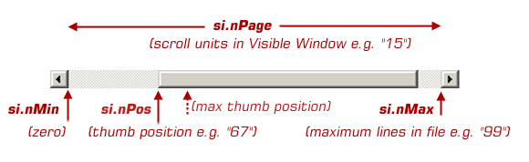
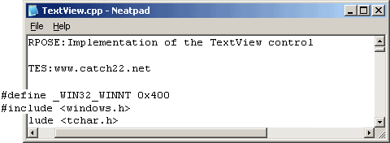

Scrollbars & Scrolling
シリーズ「Win32テキストエディタの設計と実装」の第3回目にようこそ! 今回は、TextViewコントロールにスクロールバーとスクロール機能を追加する方法をご紹介します。
Scrolling in Win32
Windowsでは、スクロールは3つの領域に分かれています。1つ目は物理的なスクロールバーで、ウィンドウに組み込まれたスクロールバーであれ、個別のスクロールバーコントロールであれ、どちらでも構いません。GetScrollPos、SetScrollInfoなど、スクロールバーによって記述される位置情報を設定および取得するための完全なスクロールバーAPIがあります。
次の領域は、スクロールバーがユーザーによって操作されたときに、その親ウィンドウに送信するウィンドウ・メッセージ、すなわちWM_VSCROLLおよびWM_HSCROLLメッセージです。これらの特別なスクロールメッセージは、アプリケーションがユーザーの操作に応じてユーザーインターフェースを更新するために使用することができます。
最後のカテゴリは、GDIスクロールAPI、すなわちScrollWindowとScrollWindowExです。Platform SDKでは「通常の」スクロールバーAPIと同じカテゴリに分類されていますが、これら2つのGDIルーチンはスクロールバーとは関係ありません。代わりに、ウィンドウ内のビットマップ領域を移動/オフセットし、スクロールしているように見せるために使用されます。
TextViewコントロールに完全なスクロールサポートを実装するためには、これらの分野をすべてまとめなければなりません。
Scrollbars - built in or separate?
まず始めに、どのようなタイプのスクロールバーを使用するかについて説明します。TextViewの非クライアントウィンドウ領域の一部である「ビルトイン」スクロールバーか、個別のスクロールバーコントロールの2つの選択肢があります。
この2つのタイプに大きな違いはありません。内蔵スクロールバーの場合、WM_xSCROLLメッセージは、スクロールバーが属する同じウィンドウに送信されます。独立したスクロールバー・コントロールでは、スクロールバー・メッセージはコントロールの親ウィンドウに送られます。しかし、親ウィンドウのスクロールバーメッセージを実際のTextViewウィンドウに転送するのは非常に簡単なので、これは何の障害にもなりません。
実際の違いは、TextViewコントロールを配置しなければならないときに現れます。なぜなら、スクロールバーコントロールは、TextViewの下端や右端に正しく配置されていることを確認するために、同時に慎重に配置しなければならないからです。このタスクは、1つのTextViewとそれに関連するスクロールバーのレイアウトを管理する「コンテナ」ウィンドウに任せることになるでしょう。
独立したスクロールバーコントロールは、柔軟性を高めることができますが（スクロールバーと一緒にグリッパーやボタンなどを追加することができます）、余分な作業が必要となるため、目の前の作業から遠ざかってしまいます。しかし、このチュートリアルシリーズの後半では、個別のコントロールを利用する方法を見ていきます。なぜなら、実際にはとても簡単なことなのですが、今のところ気にするのは少し面倒だからです。
Scrollbar settings
スクロールバーの状態（範囲や現在のサムの位置など）は、SetScrollInfo APIを使って、SCROLLINFO構造体を使って各属性を指定します。この構造を以下に示します。
struct SCROLLINFO
{
UINT cbSize;
UINT fMask;
int nMin;
int nMax;
int nPage;
int nPos;
};
下の図は、これらの4つのスクロールバーのプロパティと、それらがどのように関連しているかを示しています。この小さな例では、スクロールバーが表すデータ範囲は100行です。ここでは水平方向のスクロールバーの図を使用しましたが、垂直方向のスクロールバーも動作に違いはありません。
">
nMinとnMaxの値は、スクロールバーに含まれる「スクロールユニット」（または行）の総数を表します。今回のTextViewでは、負の行数までスクロールさせても意味がないので、nMinを0に設定します。 nMaxは、テキスト文書の総行数から1を引いた値でなければなりません。「100行のファイル」の場合、nMaxは99でなければなりません。
nPos値は、現在のスクロールバーの位置を「スクロール単位」で表します。これはピクセルや座標に基づいた値ではなく、nMin...nMaxの範囲内で任意の値を指定します。
その結果、「奇数」であるnPageが残ります。この値は、スクロール範囲やファイルの行数、現在のスクロールバーの位置とは関係ありません。純粋に、現在のウィンドウのクライアント領域内にあるスクロールユニットの数を指定するために使用されます。例えば、ウィンドウが15行のテキストを格納できる大きさであれば、nPageを15に設定します。内蔵スクロールバーは、この値を使ってスクロールバーのサムの大きさを計算しますので、サムの大きさを計算するために複雑なことをする必要はありません。
親指の最大位置は、親指の幅によってそこまで届かないため、nMaxにはならないことに注意してください。したがって、スクロールバーに関連する2つの「最大」値があります。スクロールバーがsi.nMax値として必要とするものと、サム位置の最大値として得られるもので、これは常にスクロールバーのnMaxよりもnPage単位小さい値です。
Adding scrollbars to a Window
ウィンドウにスクロールバーを追加するのは、とても簡単です。ウィンドウを作成するときに、WS_HSCROLLとWS_VSCROLLのウィンドウスタイルを追加すればよいのです。
CreateWindowEx(WS_EX_CLIENTEDGE, TEXTVIEW_CLASS, 0, WS_VSCROLL | WS_HSCROLL ...
スクロールバーで何か便利なことをする前に、TextView C++クラスの「スクロールバーの状態」を表す変数をいくつか作成しなければなりません。
class TextView
{
...
ULONG m_nVScrollPos;
ULONG m_nHScrollPos;
ULONG m_nVScrollMax;
ULONG m_nHScrollMax;
int m_nWindowLines;
int m_nWindowColumns;
ULONG m_nLongestLine;
ULONG m_nLineCount;
};
これらの変数は（初期化されると）、テキストの行をディスプレイに描画する際に、現在のスクロールバーの位置を考慮に入れることができます。
m_nVScrollPosandm_nHScrollPos
垂直および水平方向のスクロールバーのサムポジションを表す。
m_nVScrollMaxandm_nHScrollMax
スクロールバーのサムポジションが到達できる最大値を表す（ファイルの最大列数/行数ではない）。
m_nWindowColumnsandm_nWindowLines
クライアント領域の幅と高さ（それぞれ）を格納します。
m_nLongestLineandm_nLineCount
Hold the real text-file “dimensions”.
m_nLongestLineという変数が導入されていることに注意してください。これは、水平スクロールの最大範囲を表すために使用されます。この水平方向のスクロール範囲を決めるのに、任意の固定値ではなく、テキストドキュメントの最長行を使う必要がある理由は明らかでしょう。
ULONG TextDocument::longestline(int tabwidth);
TextDocument には、最長の行の幅（論理的なテキスト単位）を計算するというタスクが与えられています。タブ文字を考慮できるように、現在のタブ幅の設定を指定する必要があります。このタスクを実行するのに必要なコードはここでは紹介しませんが、ソースコードをダウンロードしてご覧ください。
Configuring the scrollbars
Win32プロジェクトを繰り返しているうちに、スクロールバーの設定が必要なのは、プログラム内の一箇所、つまりウィンドウサイズ変更時だけだということを学びました。1つの関数で、水平方向と垂直方向のスクロールバーを同時に設定することができます。
VOID TextView::SetupScrollbars()
まず、垂直スクロールバーのプロパティを設定するために、SCROLLINFO構造が構成されています。
VOID TextView::SetupScrollbars()
{
SCROLLINFO si = { sizeof(si) };
si.fMask = SIF_POS | SIF_PAGE | SIF_RANGE | SIF_DISABLENOSCROLL;
si.nPos = m_nVScrollPos; // scrollbar thumb position
si.nPage = m_nWindowLines; // number of lines in a page (i.e. rows of text in window)
si.nMin = 0;
si.nMax = m_nLineCount - 1; // total number of lines in file (i.e. total scroll range)
SetScrollInfo(m_hWnd, SB_VERT, &si, TRUE);
...
水平方向のスクロールバーも同様の方法で設定します。
...
si.nPos = m_nHScrollPos; // scrollbar thumb position
si.nPage = m_nWindowColumns; // number of columns in the window
si.nMin = 0;
si.nMax = m_nLongestLine - 1; // width of longest line (i.e. total scroll range)
SetScrollInfo(m_hWnd, SB_HORZ, &si, TRUE);
...
最後にすることは、スクロールバーの親指の最大位置を計算することです。
...
m_nVScrollMax = m_nLineCount - m_nWindowLines;
m_nHScrollMax = m_nLongestLine - m_nWindowColumns;
}
この最後の2行を理解することが重要です。m_nVScrollMaxとm_nHScrollMaxの値は、スクロールバーのsi.nMaxプロパティの設定には使われません。その代わりに、m_n_XScrollMax値は、サムの最大位置を表しています。これらの値は、TextViewの中で単独で使用されるので、今回の目的にはより有用です。
Window size affects scrolling range
最初に理解しなければならないのは、TextViewコントロールのサイズを変更するたびに、そのウィンドウ内の可視テキストの量が変わり、したがって、スクロールバーのnPage値がこれを反映して変更されなければならないということです。したがって、TextViewウィンドウがリサイズされたとき、受信したWM_SIZEメッセージに反応することができます。
case WM_SIZE:
return tvp->OnSize(LOWORD(lParam), HIWORD(lParam));
LONG TextView::OnSize(int width, int height)
{
m_nWindowLines = min(height / m_nFontHeight, m_nLineCount);
m_nWindowColumns = min(width / m_nFontWidth, m_nLongestLine);
if(PinToBottomCorner())
RefreshWindow();
SetupScrollbars();
}
最初の2行は、ウィンドウ内のテキストが何行/何列あるかを単純に計算しています。min()関数は、ウィンドウに表示できるテキストの数が多い場合（ファイル全体がウィンドウ内に収まる場合）の処理に使用されます。
この2つの値が計算されると、上で書いたSetupScrollbars関数を使ってスクロールバーを設定することができます。ここで、次の質問に移ります。
What is “Pinning” ?
次のようなシナリオを想像してみてください。テキスト文書を読み込んで、一番下までスクロールした。次に、ウィンドウを大きくするために、下のウィンドウの境界線を下にドラッグします。問題は、このときファイルの内容はどうなるのかということです。2つの選択肢がありますが、どちらも問題ありません。
現在のスクロールバーの位置をそのままにして、ファイルの最後に「ボイド」スペースを確保するか？このオプションは、ファイルの位置に影響を与えません。つまり、ファイルは静止したままです。テキスト表示が画面上の同じ場所に残るため、この方法を好む人もいます。
もう1つの方法は、ファイルの内容を同時に下にドラッグして（ウィンドウの上部にコンテンツが増える）、同時にスクロールバーの位置を調整して、常にウィンドウがテキストでいっぱいになるようにすることです。つまり、ファイルの内容をウィンドウのクライアント領域の下端に「固定」することになります。
通常のメモ帳ユーティリティーを見て、それが何をしているのかを見てみましょう。このユーティリティー（というか、標準の複数行エディットコントロール）は、コントロールのサイズが変更されたときに、コンテンツをコントロールの右下に「ピン留め」することがわかります。これは、エディットコントロールで使用する動作です。
bool TextView::PinToBottomCorner()
{
bool repos = false;
if(m_nHScrollPos + m_nWindowColumns > m_nLongestLine)
{
m_nHScrollPos = m_nLongestLine - m_nWindowColumns;
repos = true;
}
if(m_nVScrollPos + m_nWindowLines > m_nLineCount)
{
m_nVScrollPos = m_nLineCount - m_nWindowLines;
repos = true;
}
return repos;
}
上の関数は、スクロールバーの位置が常にスクロール範囲内に収まるように調整し、何か変化があったかどうかを示すブール値を返すだけで、ウィンドウを再描画する必要があるかどうかがわかります。
なお、別の方法（ファイルを下にドラッグするのではなく、最後に空のスペースを表示する）でも構いません。実際、Visual Studioや他の多くのエディタはこの方法を採用しています。実際、Visual Studioや他の多くのエディタではこの方法が採用されています。この動作をオプションとして追加することも検討しています。個人的には「ピン留め」方式の方が好きなので、まず最初にこれを実装しました。
Taking the scrollbar position into account when drawing
現在、私たちのテキスト表示は、表示を描くときにスクロールバーの情報が使われていないので、非常に原始的です。その結果、テキストファイルはTextViewのクライアントエリアの左上にしっかりと固定されており、より多くのテキストを見たい場合はウィンドウを大きくドラッグしなければなりません。幸いなことに、TextViewを完全にスクロール可能にするために必要な作業はほとんどありません。
前回のチュートリアルで覚えていると思いますが、TextView::OnPaintルーチンは、単純な式を使って更新するテキストの最初の行と最後の行を計算します。
first = ps.rcPaint.top / m_nFontHeight;
last = ps.rcPaint.bottom / m_nFontHeight;
垂直スクロールバーの位置を考慮するのは簡単なことです。
first = m_nVScrollPos + (ps.rcPaint.top / m_nFontHeight);
last = m_nVScrollPos + (ps.rcPaint.bottom / m_nFontHeight);
基本的には、描画する線のインデックスを変更することで、スクロールバーが下に移動すると、テキストの行が効果的にディスプレイの上に移動するようにします。ウィンドウ内の物理的な位置に線を描くことに変わりはありませんが、ドキュメントをスクロールしているような錯覚を与えるために異なる線を描きます。
これで、どの論理行を更新する必要があるのかを正しく判断できるようになったので、実際のテキスト出力を見てみましょう。
void TextView::PaintLine(HDC hdc, ULONG nLineNo)
{
RECT rect;
GetClientRect(m_hWnd, &rect);
// calculate rectangle for entire length of line in window
rect.left = -m_nHScrollPos * m_nFontWidth;
rect.right = rect.right;
rect.top = (nLineNo - m_nVScrollPos) * m_nFontHeight)
rect.bottom = rect.top + m_nFontHeight;
// rest of function body omitted
// draw text and fill line background at the same time
TabbedExtTextOut(hdc, &rect, buf, len);
}
まず最初に、水平方向のテキストの位置関係（rect.leftとrect.rightの値）を理解してください。水平スクロールバーの位置が大きくなると（つまり右にスクロールすると）、ページが左にスクロールすることが期待されます。そのため、スクロール位置が大きくなると、テキストの位置は小さくならざるを得ません。これが「-m_nHScrollPos」が使われる理由です。この論理的なテキスト位置に、現在のフォント幅を乗じて、描画に使用できるピクセルベースの座標を生成します。これは、固定幅のフォント表示に最適です。
テキストの行の右端は、ウィンドウの右端に固定されていなければならないので、この値は変更されません。この結果、基本的には次のような現象が発生します。右にスクロールすると、始点のX座標がどんどん負の値になっていくので、描くテキストの長さがどんどん大きくなっていきます。デバイスコンテキストが出力をクリップしていなければ、テキストの行は次のようになります。
">
もちろん、描画を左にオフセットする代わりに、水平スクロールバーの位置を利用して、バッファリングされた文字列の中から適切な描画位置を見つけ、（賢明にも）固定のx座標0からすべての描画を行うこともできました。これは単純なテキスト表示ではうまくいくでしょう。しかし、「タブ付き」のテキスト表示には問題があり、さらに複雑なシンタックスの色付けや可変幅のフォントを始めると、すぐにこの方法では不十分な選択になってしまいます。今のところ、水平方向のスクロールをどのように処理するのがベストなのかは未定なので、今はこのシンプルな方法を使うことにします。
次に、垂直スクロールバーの位置について説明します。PaintLine関数には、文書の先頭からの相対的な「論理的」行番号( nLineNo )が与えられているので、この値から垂直スクロールバーの位置を引いて、クライアント領域の先頭からの相対的なゼロベースのインデックスを得る必要があります。この値にフォントの高さを掛けて、ピクセルベースのY座標を算出します。
Scrollbar Messages
これで、TextViewに実際のスクロール機能を追加する準備ができました。WM_HSCROLLハンドラはほとんど同じなので、ここではWM_VSCROLLメッセージだけに集中します。WM_VSCROLLのPlatform SDKドキュメントを見ると、wParamの低次WORDにスクロールコードが入っていると書かれています。これは以下の値のいずれかになります。SB_TOP, SB_BOTTOM, SB_LINEUP, SB_LINEDOWN, SB_PAGEUP, SB_PAGEDOWNなどです。基本的には、スクロールバーのどの部分がマウスでクリックされたかを教えてくれます。
まず、SB_TOPとSB_BOTTOMのメッセージを見てみましょう。垂直スクロールバーのハンドラは次のようになります。
LONG TextView::OnVScroll(UINT nSBCode, UINT nPos)
{
switch(nSBCode)
{
case SB_TOP:m_nVScrollPos = 0;
RefreshWindow();
break;
case SB_BOTTOM:m_nVScrollPos = m_nVScrollMax;
RefreshWindow();
break;
...
}
// update the scrollbar metrics
SetupScrollbars();
return 0;
}
SB_TOP と SB_BOTTOM のケースは非常にシンプルです。必要なのは、スクロール位置をスクロール範囲の両端に移動させ、その変更を反映させてウィンドウ全体を再描画することだけです。
スクロールバーの「親指」メッセージへの反応も非常にシンプルです。
case SB_THUMBPOS: case SB_THUMBTRACK:
m_nVScrollPos = GetTrackPos32(m_hWnd, SB_VERT);
RefreshWindow();
break;
...
GetTrackPos32は、GetScrollInfoの単純なラッパー関数です。
LONG GetTrackPos32(HWND hwnd, int nBar)
{
SCROLLINFO si = { sizeof(si), SIF_TRACKPOS };
GetScrollInfo(hwnd, nBar, &si);
return si.nTrackPos;
}
これは、WM_VSCROLLメッセージから得られる16ビットの位置ではなく、完全な32ビットのスクロールバーの値を求めるために必要です。
残りの4つのケース(SB_LINEUP, SB_LINEDOWN, SB_PAGEUP, SB_PAGEDOWN)は若干異なります。
case SB_LINEUP:
Scroll(0, -1);
break;
case SB_LINEDOWN:
Scroll(0, 1);
break; case SB_PAGEUP:
Scroll(0, -m_nWindowLines);
break; case SB_PAGEDOWN:
Scroll(0, m_nWindowLines);
break;
...
ご覧のように、実際の作業はプライベートなスクロール関数に委ねていますが、これはすぐに実装します。
VOID TextView::Scroll(int dx, int dy);
この関数は、2つの符号付き整数のパラメータを受け取ります。その目的は、ビューポートをスクロールする方向と量（テキスト単位）を指定することです。SB_LINEUP/DOWN のメッセージハンドラを見ると、上にスクロールする場合は -1 を、下にスクロールする場合は 1 を指定しています。同様に、SB_PAGEUP/DOWN の場合は、ページ全体分のテキスト (つまり、現在ウィンドウに表示されている行数) で上下にスクロールします。ドキュメントの開始/終了から外れてスクロールしないように、Scroll関数に任せます。
Scrolling the Viewport
スクロールは1つの関数呼び出しの中に分離されています。これにはいくつかの利点があります。これらを理解することで、将来、より良いプログラムを開発することができます。まず最初の（そして最も明白な）利点は、モジュラーデザインの利点です。スクロール関数は、コントロールの他の多くの部分で再利用することができますが(既に垂直と水平のスクロールバーのメッセージに2回使用しています)、キーボードやマウスのスクロールに関してもこの関数を有効に活用することができます。
最大の利点は、一見しただけではわかりませんが、デザインを大幅に簡素化できることです。一度に2つの方向（水平と垂直）にディスプレイをパンすることができるスクロール関数を設計することで、マウススクロールのインタラクションを大幅に強化することができます。多くのコントロールは、2つのスクロール・メッセージを同時に送信することに頼っています。これは、スクロールの不具合やアーティファクトを引き起こす可能性があり、また、操作も少し不器用です。
VOID TextView::Scroll(int dx, int dy)
{
// make sure dx,dy don't scroll past the end of the document!
// adjust the scrollbar thumb position
m_nVScrollPos += dy;
m_nHScrollPos += dx;
if(dx != 0 || dy != 0)
{
// perform the scroll
ScrollWindowEx(
m_hWnd,
-dx * m_nFontWidth,
-dy * m_nFontHeight,
NULL,
NULL,
0, 0, SW_INVALIDATE
);
SetupScrollbars();
}
}
上の関数は完全ではありません。 dxとdyが現在のファイルの境界の外にスクロールできないようにするための重要なロジックが欠けています。ソースコードのダウンロードにはこのコードが含まれています。
私が本当に見せたかったのは、表示を更新するためのScrollWindowEx APIでした。TextView::Scroll関数は今のところ非常にシンプルですが、うまく機能しています。つまり、ちらつきなくスムーズにウィンドウをスクロールします。次のチュートリアルでは、マウスによる選択範囲のスクロールを見るときに、この関数を再考します。
MouseWheel support
スクロールを見ている間に、マウスホイールによるスクロールのサポートを実装してもいいかもしれません。WM_MOUSEWHEELメッセージは、Windows 98とWindows NT4で追加され、マウスホイールによるスクロールを実現しました。このメッセージをサポートするためには、新しめのPlatform SDKがインストールされている必要があります。また、
WM_MOUSEWHEELのハンドラは、単純にホイール回転の差分（つまり、前後のベクトル）を抽出し、TextViewクラスの本当のメッセージハンドラを呼び出します。
case WM_MOUSEWHEEL:
return ptv->OnMouseWheel((short)HIWORD(wParam));
ハンドラは、システム設定の SPI_GETWHEELSCROLLLINES を使用して、何行分のスクロールを行うかを計算します。
LONG TextView::OnMouseWheel(int nDelta)
{
int nScrollLines;
SystemParametersInfo(SPI_GETWHEELSCROLLLINES, 0, &nScrollLines, 0);
if(uScrollLines <= 1)
uScrollLines = 3;
Scroll(0, (-nDelta/120) * uScrollLines);
}
それもそのはず、私たちが開発したScroll機能をうまく利用して、大変な作業をしているからです。ほら、便利だと言ったじゃないですか。)
Coming up in Part 4
このチュートリアルの先頭にあるzipファイルをダウンロードして、最新のNeatpadを使ってみてください。このような少量のコードで、すでにかなり便利なツールになっています。かなり効果的なテキストドキュメント表示アプリケーションになっています。もちろん、大きなファイルはまったく扱えませんが、どこまでやればいいのか、いいアイデアが得られるはずです。
次のチュートリアルでは、マウスサポートが目的となります。フォーカスとテキストキャレットのサポート、マウスによるキャレットの位置決め、テキストの全選択を追加する方法を見ていきます。このためには、もちろん、描画コードの修正が必要です。また、「マウススクロール」も実装します。つまり、テキストの選択範囲がウィンドウからはみ出してしまい、内容をスクロールして表示しなければならないような場合です。これまでに行ってきたスクロール作業により、この作業は非常に簡単になります。